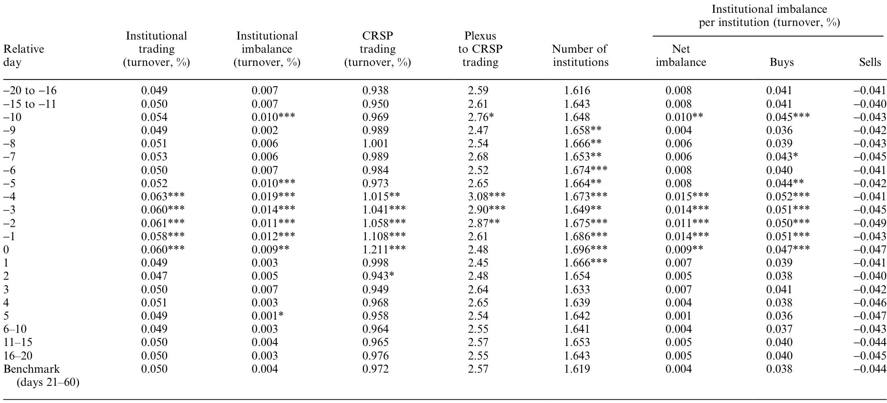
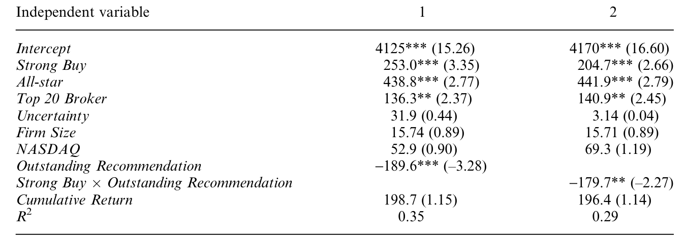
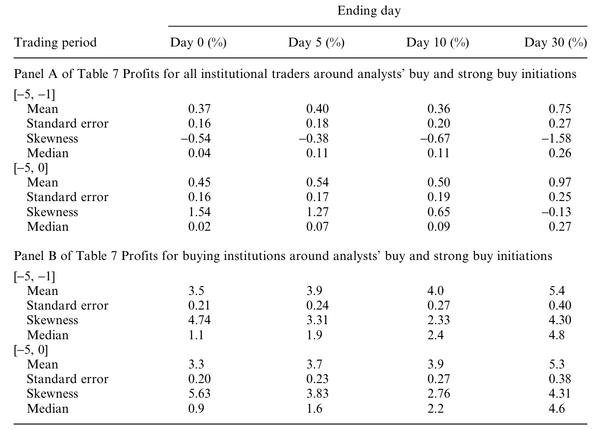
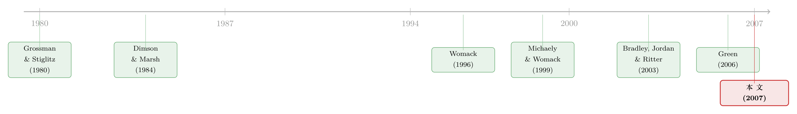

报告还没发，他们已经先买了五天——研报里那条「通风报信」的暗线
本文读的是 Irvine, Lipson & Puckett (2007, Review of Financial Studies)：在分析师首次发布买入评级 (initiation) 之前的大约五个交易日里，机构投资者的成交量和净买入就开始异常上升；而且这股「抢跑」的力度，竟然系统性地与还没公开的报告内容（是否「强烈买入」、是不是顶级券商、是不是明星分析师）相关——这意味着有人提前知道了报告里写了什么。作者把这件事叫做 通风报信 (tipping)。
1 一个让人不太舒服的问题
先讲一件几乎所有人都默认、却很少有人摆到桌面上讲的事。
卖方分析师 (sell-side analyst) 写一份研报，是要花钱的——养分析师、做调研、跑模型，全是成本。这笔钱从哪儿收回来？答案是佣金 (commission)。券商把研报「免费」发给客户，客户因为看了研报而下单交易，券商在交易里抽佣金。研报越值钱，愿意把单子下到这家券商的机构就越多，佣金就越多。于是一条朴素的经济逻辑浮现出来：研报的价值，必须能转化成交易，券商才有动力继续生产研报。
可问题是，研报里最值钱的那一刻，是它还没公开的那一刻。事件研究 (event study) 一再告诉我们，分析师首次「买入」或「强烈买入」评级公开当天，股价会跳一下;等你在新闻里看到它，价格早就反应完了。Dimson 和 Marsh (1984) 很早就指出：在公开发布之前买进是赚钱的，发布之后一天甚至一周再买，就不赚了。
那么一个自然的、也有点不舒服的问题就来了：既然研报的价值集中在公开前那一瞬间，券商又有强烈的动机把这份价值「兑现」成佣金——它会不会干脆把报告内容，提前悄悄告诉几个最重要的客户？
这就是「通风报信」。作者要回答的，正是：这件事到底存不存在？如果存在，它长什么样？
2 这不是内幕交易那么简单
在往下走之前，得先把一个容易混淆的东西讲清楚：tipping 跟我们熟悉的内幕交易 (insider trading)，法律地位完全不一样。
作者专门花了一整节去查监管。结论相当微妙。美国证券交易商协会 (NASD) 的 Rule 2110 及其解释条款 IM-2110-4 明确禁止券商自己在研报发布前抢先交易——因为那是占自己客户的便宜。但是请注意，这条规则只管券商自己，它没有说券商不能把即将发布的报告内容告诉客户，也没说客户不能据此交易。换句话说：
公司自己抢跑 = 违规;但公司把消息透露给某几个大客户、让客户去抢跑 = 法律上几乎是一片灰色地带。SEC 法律顾问告诉作者，tipping 也许能往 Rule 10b-5 上靠，但那条规则通常只用在内幕交易案里，而且一切都得「个案处理」。事实上，从来没有分析师因为 tipping 被起诉过——只有一个被开除过（Smith, 2003 记录的那位摩根士丹利分析师）。
作者由此点出全文真正的「定性」：tipping 的核心争议，不在于它是否违法，而在于券商有没有对客户承诺过「我对所有人一视同仁」。这个结构，和共同基金里的「择时交易 (market timing)」一模一样——有些基金白纸黑字承诺过不许快进快出，有些没承诺。承诺过却做了，才是问题。
把法律讲清楚之后，作者的任务就变得很纯粹：我不去判定它合不合法，我只用数据告诉你，它在不在发生。
3 识别策略：为什么偏偏盯着「首次评级」
要证明「有人提前知道了报告内容」，最大的敌人是混淆事件 (confounding events)。万一机构是在公开评级前因为别的消息（财报、并购传闻、行业新闻）而买入，那异常买入就跟 tipping 没关系了。作者的整套识别，几乎都是围着「怎么排除混淆」转的。
第一招，只看首次评级 (initiations)，不看评级调整。 这是全文设计上最关键的一步。相比「调高/调低评级」，一只股票第一次被某券商某分析师覆盖，更不容易和其他重大事件挤在一起（Stickel 1989; Juergens 2000）。这就大幅降低了「异常交易其实是别的事件驱动的」这种可能。
第二招，卡掉所有可能的混淆窗口。 作者从 I/B/E/S 里捞出 23,379 条首次评级，然后层层过滤（沿用 Irvine 2003 的口径）：
- 删掉发布在公司财报前后五个交易日内的；
- 删掉股价低于
$5的; - 删掉过去六个月内 IPO 过的公司（因为静默期结束会带来可预测的评级——Bradley, Jordan & Ritter 2003）；
- 要求有 CRSP 的价格、成交量、流通股数据；
- 删掉前后 11 天窗口内还有另一条首次评级的观测。
一路筛下来，剩 13,204 条（覆盖 4677 家公司），其中 9065 条是 buy 或 strong buy。作者只研究 buy / strong buy，因为它们对应一个明确无歧义的策略——提前买入。
第三招，也是我最欣赏的一招——把「时间线」算清楚。 Cheng (2000) 发现，券商内部的合规审查通常要花四天。也就是说，一份报告的内容在公开好几天前，在公司内部就已经定稿、并被一群人知道了。作者观测到的异常交易恰恰始于公开前约五天——正好落在「报告刚进入内部审查流程」的时间点上。这条时间线对得太严丝合缝，于是作者敢说：我看到的交易，发生在报告已经写好之后，因此不可能是「某个事件同时触发了评级和交易」——因为评级的内容此刻已经定死了。
第四招（也是最漂亮的反证）：横截面的非随机性。 如果异常买入是外生事件驱动的，那它在不同券商之间的分布应该是随机的。可作者发现，prerelease 的异常买入高度集中在一小撮券商身上。一个外生新闻凭什么偏爱某几家券商的客户？讲不通。能讲通的只有一种故事：这几家券商在「是否、如何、是否执行禁止 tipping 的内部政策」上跟别人不一样。
把这四招叠在一起，因果链就闭合了。
4 数据：一份很难得的「成交簿」
识别再巧，也得有数据喂。本文的命门是机构交易数据——它来自 Plexus Group，一家专门监测机构交易成本的咨询公司，其客户管理着超过 $4.5 万亿的股票资产。样本里有 120 家机构客户的真实成交记录。
注意这个数据的特殊性：它不是「持仓快照」，而是逐笔执行的买卖单，能区分买和卖、能算到每家机构。这正是检验 tipping 所必需的——因为 tipping 的预测非常具体：发布前应该出现异常的买入失衡 (buy imbalance)，而不只是「成交量变大」。
- 观测单位：每条「首次评级」事件 × 交易日。
- 事件窗口：评级公开日前后各 60 个交易日，即
[-60, +60]。 - 样本期：I/B/E/S 评级取自 1996-03-31 至 1997-12-31，以及 2000-03-31 至 2000-12-31;Plexus 成交数据覆盖 1996-01-01 至 1998-03-31、2000-01-01 至 2001-03-31（中间的断档是数据缺失，非人为）。
- Plexus 客户总共成交了
47,588百万股，平均每条评级5,481千股——且高度右偏（中位数只有1,042千股）。
作者先做了一道「体检」，确认自己的样本和前人对得上：用规模调整收益 (size-adjusted return) 看评级公开前后的价格反应。所谓规模调整收益，就是把个股当日收益减去同一 CRSP 规模十分位组合的平均收益：
$$ AR_{i,t} = R_{i,t} - \bar{R}_{\text{decile},t} $$
显著性检验用事件后窗口 [20, 60] 的时间序列均值和方差来标定。结果（Table 2）非常干净：公开当天 (day 0)，strong buy 的规模调整收益是 1.145%，buy 是 0.500%;[-5, +5] 的累计收益，strong buy 高达 2.848%，buy 是 1.176%。这和 Barber et al. (2001) 在 Zacks 数据上得到的 strong buy 三日 1.09%、buy 0.48% 量级相当。更重要的是：公开前已经有一小段价格爬升 (run-up)——这恰恰是「发布前已有知情交易」的指纹。比如 day -5 的规模调整收益 0.161%（1% 水平显著），strong buy 那一组更是 0.197%。
价格里有指纹，那交易里呢？
5 核心结果：抢跑的是「钱」，不是「人数」
这是全文的心脏。作者发现，在评级公开前约五个交易日，机构的成交量和净买入开始显著异常上升（如表 4 所示）。

Table 4: also presents the average number of institutions trading, the
但真正关键、也最能区分「tipping」和「碰巧」的，是这股买入的结构。作者把异常买入拆开看：它几乎全部来自「每家机构的平均买入量上升」，而机构的数量几乎没变，每家机构的卖出量也没变。
请停下来想想这个结构意味着什么。如果是公开的、广泛传播的消息（比如行业新闻），你会看到更多机构涌进来买——参与人数上升。可这里参与的机构数没怎么变，是原本就在场的那批机构、每家买得更多了。这正是「只有一小撮被通风报信的客户在加码」的样子，而不是「大家都收到消息」的样子。
这也和事件研究的另一个推论自洽：既然公开当天价格还能大跳 1.145%，说明 tipping 不可能是普遍的——否则知情者之间的竞争早就把价格反应抹平在发布之前了（Holden & Subrahmanyam 1992）。所以 tipping 只能是限于少数偏爱客户的小范围行为。而且事件后并没有出现 Lloyd-Davies & Canes (1978)、Barber & Loeffler (1993) 那种「二手信息发布后的价格回吐」;相反，Womack (1996) 记录的是评级方向上的持续漂移——这进一步排除了「只是价格压力」的解释。
接着，一个更狠的检验：如果真是 tipping，异常买入的力度应该和「报告有多值钱」挂钩。 因为机构提前下单的意愿，应该正比于它对公开后异常收益的事前预期。任何已被文献证明能放大评级后收益的特征，都应该能预测「抢跑」的强度。作者把这些特征塞进回归（如表 6 所示）：

Table 6: presents the results of our regression analysis. None of the
结果与 tipping 假说一致：异常买入对 strong buy 比对 buy 更强（strong buy 预期收益更高，Stickel 1992 / 本文 Table 2 都验证过）；对 Institutional Investor 排名前 20 的顶级券商发布的评级更强（Womack 1996）;对 明星分析师 (All-star) 发布的评级更强（Stickel 1992 发现 All-star 的评级带来更大异常收益）。换句话说，机构抢跑的程度，精确地追踪着它们还看不到的那份报告里的内容——这是「提前知道内容」最有说服力的证据，因为外生事件没有理由懂得挑「强烈买入 + 顶级券商 + 明星分析师」下手。
最后，把链条焊死的一环：这些提前买入的机构，真的赚到钱了吗？ 作者直接算了那些在公开前买入的 Plexus 机构的交易利润（如表 7 所示），确认它们获得了异常利润。

Table 7: analyzes the trading profits of Plexus institutions that trade
至此，逻辑闭环：发布前异常买入 → 结构上像「少数人加码」而非「众人入场」→ 力度追踪未公开的报告特征 → 提前买入者确实赚钱 → 而且高度集中在少数券商。每一步都指向同一个解释。
6 文献脉络
把这篇论文放回它的坐标系，会更清楚它的位置。
故事的源头是 Grossman & Stiglitz (1980) 那个著名的悖论：如果价格完全反映信息，谁还有动力花成本去收集信息？信息的生产者必须能从信息里捞到好处，否则信息根本不会被生产。tipping 在经济学上恰恰是这个悖论的一个「解」——一个无法直接交易自己信息的生产者（分析师/券商），通过把信息透露给客户、再从客户的佣金里间接获利。
接着是分析师研报「有没有用」这条实证主线。Womack (1996) 证明券商评级有投资价值、且公开后存在持续漂移;Kim, Lin & Slovin (1997)、Michaely & Womack (1999)、Bradley, Jordan & Ritter (2003) 一路确认买入/强烈买入评级伴随 3–4% 的异常收益。而 Dimson & Marsh (1984) 则点破了时间维度的要害：钱在公开之前赚，公开之后就没了。

再往后，研究开始钻进「分钟级」的速度问题：Green (2006)、Goldstein et al. (2006) 发现价格反应极快，可获利的窗口在分钟到小时之间就消散了——这反过来抬高了「能在公开前下单」的价值。本文正是站在这一堆肩膀上：前人确认了「公开前买入有利可图」，本文则用一份罕见的机构成交簿，直接抓到了这种买入在发生、并证明它和未公开的报告内容相关。它也顺手回应了 Griffin, Harris & Topaloglu (2003) 的动量交易解释——作者控制了过去收益后，买入异常依然在，说明不是机构在追涨。
在中文博客里，这条「知情者抢在公开消息前布局」的线索，其实反复出现过。机构在新闻公开前就站好队的直接证据，可参见《财报还没发，机构已经站好了队》；而券商/经纪人比公开渠道知道得更早这一点，可参见《你的经纪人，比 SEC 公告知道得更多》。公告日前那点「凭空」的异常交易，也和《公告日那点「凭空」的正收益》的关切相通。
7 评论与延伸（Q&A + 研究方向）
(a) 几个可能的疑问
Q：这和「内幕交易」到底有什么区别？
区别在信息的性质和法律定性。内幕交易针对的是公司未公开的重大基本面信息，有明确的 Rule 10b-5 禁令和大量判例。tipping 泄露的是分析师即将发布的观点——它本身不是公司内幕，而是券商自产的信息;监管几乎是灰色的，从没人被起诉。作者反复强调：tipping 的是非，关键不在违法，而在券商是否承诺过「一视同仁」。
Q：异常买入会不会只是机构在追涨（动量交易）？
这是最直接的竞争性解释，作者专门处理了。控制了过去收益之后，发布前的买入异常依然存在，因此不是 Griffin, Harris & Topaloglu (2003) 记录的那种机构动量。更何况动量解释无法说明「为什么买入力度会追踪 strong buy、顶级券商、明星分析师这些还没公开的特征」。
Q：怎么确定不是 I/B/E/S 的日期记错了，把公开日标早了？
作者随机抽了约 2% 的评级（265 条）和道琼斯新闻线交叉核对。在能匹配的样本里日期高度吻合（57 条精确匹配，4 条仅差一天），且 133 条没被道琼斯报道是因为道琼斯只登最大券商的评级。结论是：早至发布前五天的异常成交量，无法用 I/B/E/S 的日期误差来解释。
Q：只看「首次评级」会不会限制了外部有效性？
会，这是为识别付出的代价。首次评级更「干净」（不易和混淆事件捆绑），但它不能直接推广到评级调整、目标价变动等更频繁的情形。好处是：在最干净的样本里都能抓到 tipping，说明现象真实存在;坏处是我们不知道它在更嘈杂的事件类型里有多普遍。
Q：为什么作者说 tipping 的福利后果「不明确」，而不是直接谴责？
因为有 Grossman-Stiglitz 那一面。tipping 让券商能把研报价值兑现成佣金，从而补贴了研报的生产;一旦全面禁止，研报供给会下降，价格效率可能反而变差。它让一部分交易者受益、另一部分受损，净福利是模糊的。这种克制的、不下道德判断的笔法，恰恰是这篇论文的成熟之处。
Q：异常买入「集中在少数券商」这件事，凭什么能当证据用？
这是一个聪明的「安慰剂」式推理。外生事件（行业新闻、宏观冲击）没有理由偏爱某几家券商客户的下单;只有「这几家在 tipping 政策的执行上松紧不同」才能解释非随机的集中分布。它把「外生事件驱动」这个最难排除的对手，用横截面结构挡了回去。
(b) 几个可能的研究问题与提案
1. 把 tipping 搬到公司债市场。
- 【经济故事】卖方对信用/债券的评级与研究同样存在，而债券是 OTC 交易、信息更不透明、做市商-客户网络更集中。如果股票里存在 tipping，债券里很可能更严重，因为「少数偏爱客户」的结构在 OTC 里天然更突出。
- 【可行性】中。需要 TRACE 的逐笔成交 + 卖方债券评级/研报发布时点 + 交易商身份。识别可沿用本文思路（发布前 [-5,0] 的异常净买入、是否集中于少数交易商）。难点是债券评级初次覆盖的「事件」不如股票清晰，需要谨慎定义。
2. Reg FD 与 MiFID II 之后，tipping 还在吗？ - 【经济故事】本文样本是 1996–2001，早于很多披露改革。Regulation FD（2000）针对公司，MiFID II（2018）则把研究和佣金「解绑 (unbundling)」——这恰好打断了「研报靠佣金回本」的经济基础。一个干净的双重差分 (difference-in-differences, DiD) 可以检验：解绑之后，发布前异常买入是否减弱。 - 【可行性】高。MiFID II 提供了清晰的政策断点和欧美对照，机构成交数据虽难拿但学界已有渠道。这是一个 doable 且有政策含义的设计。
3. 外资机构会不会是 tipping 的「净接收方」？ - 【经济故事】跨境机构与本地券商的关系更依赖佣金，且监管套利空间更大。一个自然的问题是：发布前异常买入里，外资持有人 (foreign institutions) 的占比是否系统性更高、或更集中于特定券商关系。 - 【可行性】中。需要带机构国籍标签的成交/持仓数据（如部分托管行或 13F + 国别匹配）。识别上可比较同一评级事件中本地 vs. 外资机构的发布前买入失衡。数据是主要瓶颈。
4. tipping 与流动性提供的此消彼长。 - 【经济故事】被通风报信的机构在发布前加码买入，相当于提前消耗了流动性;那么公开当天，为非知情交易者提供流动性的成本是否更高、价差是否更宽？这把 tipping 和市场质量直接挂钩。 - 【可行性】高。用 TAQ 级别的日内数据，比较「发布前异常买入高」与「低」的评级事件，在公开日的 bid-ask spread 和价格冲击差异即可。识别清晰，数据可得。
8 我的判断
这是一篇我很愿意拿来给学生讲「如何用一个干净的设计回答一个脏问题」的论文。它的贡献是实质性的：在它之前，「分析师会不会提前透露报告」更多是行业里心照不宣的传闻;它第一次用一份真实的机构逐笔成交数据，把这个传闻变成了可检验、并被多重证据支持的实证事实。尤其是「异常买入只来自每家机构加码、而非参与人数上升」「买入力度追踪未公开的报告特征」「集中在少数券商」这三块互相独立的证据拼在一起，论证力远超任何单一回归。
对识别的担忧我有两点。其一，全部依赖 Plexus 这 120 家客户——它们是付费做交易成本分析的机构，本身就偏「大、活跃、关系深」，恰恰是最可能被通风报信的那群。这让结果更可能捕捉到 tipping，但也意味着我们无法外推到普通机构，更无法量化整个市场的 tipping 规模。其二，样本期止于 2001 年，正好在 Reg FD 落地前后，今天的制度环境已经大不相同——这篇论文记录的，可能是一个特定监管真空期的快照。
我最想看到的后续，是把这套方法放进佣金解绑（MiFID II）的自然实验里：如果 tipping 的根在「研报靠佣金回本」，那么一旦法律强行切断这条经济链，发布前的异常买入就该明显萎缩。那将不只是再确认一次 tipping 存在，而是直接验证作者在引言里讲的那套 Grossman-Stiglitz 式机制——也才能真正回答那个被作者谨慎地悬在半空的问题：管住 tipping，到底是让市场更公平，还是让价格更笨。
参考文献
- Barber, B., R. Lehavy, M. McNichols, and B. Trueman (2001). Can Investors Profit From the Prophets? Security Analyst Recommendations and Stock Returns. Journal of Finance 56(2), 531–563.
- Barber, B. M., and D. Loeffler (1993). The "Dartboard" Column: Second-Hand Information and Price Pressure. Journal of Financial and Quantitative Analysis 28, 273–284.
- Bradley, D., B. Jordan, and J. Ritter (2003). The Quiet Period Goes Out With a Bang. Journal of Finance 58(1), 1–36.
- Cheng, Y. (2000). Informativeness of Analyst Recommendations. Working Paper, Wharton School of Business.
- Dimson, E., and P. Marsh (1984). An Analysis of Brokers' and Analysts' Unpublished Forecasts of U.K. Stock Returns. Journal of Finance 39(5), 1257–1292.
- Green, C. (2006). The Value of Client Access to Analyst Recommendations. Journal of Financial and Quantitative Analysis 41(1), 1–24.
- Griffin, J., J. Harris, and S. Topaloglu (2003). The Dynamics of Institutional and Individual Trading. Journal of Finance 58, 2285–2320.
- Grossman, S. J., and J. E. Stiglitz (1980). On the Impossibility of Informationally Efficient Markets. American Economic Review 70, 393–408.
- Holden, C. W., and A. Subrahmanyam (1992). Long-Lived Private Information and Imperfect Competition. Journal of Finance 47, 247–270.
- Irvine, P. J. (2003). The Incremental Impact of Analyst Initiation of Coverage. Journal of Corporate Finance 9(4), 431–451.
- Kim, S., J. Lin, and M. Slovin (1997). Market Structure, Informed Trading and Analysts' Recommendations. Journal of Financial and Quantitative Analysis 32, 507–524.
- Lloyd-Davies, P., and M. Canes (1978). Stock Prices and the Publication of Second-Hand Information. Journal of Business 51(1), 43–56.
- Michaely, R., and K. Womack (1999). Conflict of Interest and the Credibility of Underwriter Analyst Recommendations. Review of Financial Studies 12, 653–686.
- Stickel, S. E. (1989). The Timing and Incentives for Annual Earnings Forecasts Near Interim Earnings Announcements. Journal of Accounting and Economics 11(2–3), 275–292.
- Stickel, S. E. (1992). Reputation and Performance Among Security Analysts. Journal of Finance 47, 1811–1836.
- Womack, K. L. (1996). Do Brokerage Analysts' Recommendations have Investment Value? Journal of Finance 51, 137–167.